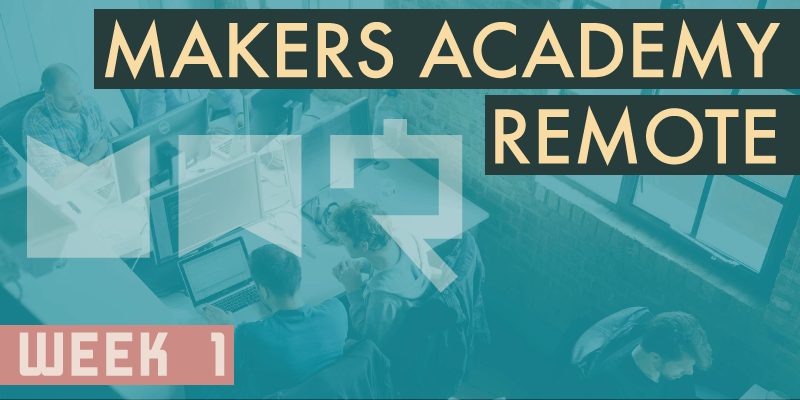
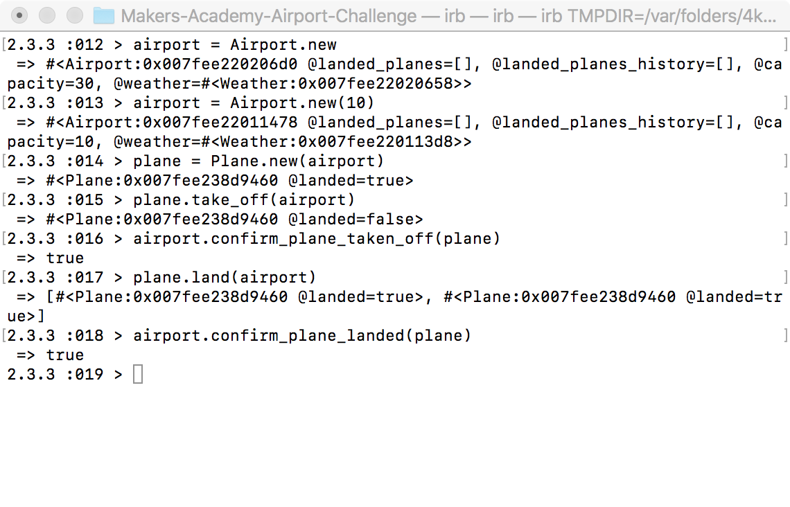

The fact that it's currently Thursday of week 2 and I'm only now managing to post about week 1 might go some way to demonstrating just how busy I've been with Makers Academy!
Week 1 was fantastic and I loved every minute, although it's become clear already that I need to address my work/life balance a little. During week 1 I coded until at least 10.30pm each day, I got up at 6.30am on Saturday to code with others from my cohort until 11pm, and Sunday was another all-day coding marathon too. Coding is still a novelty and I'm loving it so much that I'm happy to spend all of my time on it, and the long hours I've been putting in have to a large degree been in order to keep up with the workload. However there has to come a point when I accept that sometimes I'm not going to keep up with the workload, rather than pushing myself to the point of exhaustion. It seems like there's always more to do, and that completion isn't the point.
Boris bikes
The work this week has been enjoyable. Throughout week 1 we've been tasked with building a command line version of London's Boris Bikes bike rental system, with a strong emphasis on learning the principles of TDD (Test Driven Development) along the way. According to TDD no production code can be written until a suitable test has first been created. It can be jarring at first to discover that the first step is to write a test which we already know will fail, because it's testing a feature of our production code that hasn't been written yet. However reaching that first fail is important, because then when we can go on to write the production code that satisfies the test, we can watch the test turn from a fail to a pass, and be sure that our production code does exactly what we hoped it would. Once a test has been passed we go in to the refactor stage, which is an opportunity to revisit the code we just created and improve it to better follow the Object Oriented Programming best practices we've been learning about.
I realise that I've just used the phrase Object Oriented Programming without explaining it, so let me give a quick definition, based upon my early understanding. In programming there are various popular paradigms, ways of structuring code, and one of those is called Object Oriented Programming. This means that the code is organised in to separate ‘objects' which communicate with one another to produce a complete program. Using this technique we can organise our code to roughly mimic any real world structures that our code might be simulating. For example when developing our bike transport system we can code separate objects for a bike, a bike docking station and a garage, and have those objects work with one another just as we'd expect; our docking station object can be coded to accept a bike object, and a bike object can go in to a garage object when it requires maintenance. Object Oriented best practices refer in a large part to keeping the communication between these objects to a minimum. It's easy to create a spaghetti code nightmare where every object communicates with every other in several ways, but this can lead to difficult to maintain code, and difficult to find bugs. Best practices teach us that each object need only communicate with objects that it relies upon. For instance a garage object doesn't even need to know that a docking station object exists if it doesn't need to work with it directly. Keeping the interface between objects as simple as possible will make the code much easier to work with.
Regarding code testing, we've learned that there are two distinct types of test, feature tests and unit tests. Broadly speaking you begin with a feature test, which attempts to emulate the way that the end user would interact with the program. Then we move on to the unit tests, which break down each of the broad strokes from the feature test into smaller tests which each test only one particular feature in isolation. By their nature once all unit tests have been passed, usually the feature test will pass also.
Pairing
Each day we've been pairing with a student from our cohort, the pairings selected at random by mechacoach, an anonymous digital entity who broadcasts our pairings each evening on Slack. It's becoming very clear now how advantageous pair coding is, it's so useful to have somebody to bounce ideas around with, and to plan a solution with. Pair coding is implemented using a system called Git-pong, which roughly follows the steps below:
- Coder 1 does the driving on their machine while sharing their screen with coder 2, who takes the role of navigator.
- Once at a suitable swapping point, coder 1 commits and pushes the code to GitHub.
- Coder 2 pulls the code down from GitHub, and shares their screen while driving. Coder 1 now navigates.
- At the next suitable swapping point coder 2 commits the changes and pushes to GitHub.
- Coder 1 pulls the changes from GitHub, and so it continues.
Bonus points if you shout ‘Pong!' each time you swap roles. Interestingly because we change partners each day, we're regularly working with somebody else's code base. Each morning when we meet with our new partner, we compare code bases. Whoever has managed to get the furthest has to give up their code base and drop back to where the other is. This might seem frustrating for the partner who drops back, but it gives them a great opportunity for practice, and a great chance to discover whether they really do know everything they thought they do about the completed part of the challenge, by attempting to explain it to the partner who hasn't covered it yet.
While there is a clear benefit in working on the same challenge multiple times, this week I found myself in the situation where every day I was the partner dropping back, sometimes even dropping back to where I was two days beforehand. While this was helpful in solidifying my knowledge of the early challenges, it had the effect that I never reached anywhere near the end of the Boris Bikes challenge by the end of the week. Makers Academy say this is not a bad thing, that as long as we're learning something new each day then nobody cares how many challenges we've completed. However my concern was that by missing so much of the later content I'd be at a disadvantage during the weekend challenge, when that knowledge might be required.
It wasn't just myself who felt this way, which is why a few of us agreed to spend the whole of Saturday working together to finish the week's Boris Bikes challenge, before attempting the weekend challenge alone on Sunday. I was sat at my desk from 7am on Saturday until 11pm (with some breaks), and we still didn't manage to complete the week's challenge, but we did get very close. Makers Academy would say that this catch-up session was unnecessary, but we felt the need to do it so that we weren't at a disadvantage compared with others in our cohort who didn't have to drop back regularly throughout the week.
Airport system
The weekend challenge was based around developing a command line airport system, using many of the same techniques we used during the week. The primary difference is that weekend challenges are to be completed alone, to test how well we're learning as individuals. This was a fun challenge, and I'm really pleased with how well my solution worked out. While I love pair-coding there's something really nice about completing a project alone. When pair coding there are always compromises to be made, and dropping back to a partner's code base brings the feeling that the work isn't really your own, you don't feel an ownership of the project, and need to keep familiarising yourself with how somebody else has tackled a problem that you might have solved differently. Of course in the real world developers often do jump in and out of established code bases, so it's a very useful skill to acquire, but having the chance to work on a solo project is just a different experience.

The weekend's airport challenge. So far our programs are confined to the command line, but that offers a lot of flexibility.
Day-to-day routine
Aside from the challenges, each week day there are stand-up meetings, in which we take it in turns to speak about what we achieved yesterday, what we want to achieve today and anything that might be blocking us. These stand-ups are really useful, and often several of us seem to be sharing similar problems, which can lead to our coach Sam holding a break-out session to clear up some issues, or perhaps he'll suggest a resource that will help. Most days there are also workshops, which take the form of Sam demonstrating various concepts, and are always enlightening, and presented in a very open manner that invites questions.
On Fridays things are a little different from the rest of the week, much of the day is devoted to confidence surveys and a retro(spective) meeting. For the confidence surveys, we're each given a survey which asks us to grade topics that we've encountered during the week based on our level of confidence using them, from 1 (not at all confident) to 10 (very confident). For this we're split in to groups of 4-5, and we begin by completing the survey alone, but not yet hitting the submit button. Once everyone in the group has completed their form we discuss our responses together for around an hour, which leads to individuals explaining concepts that they're confident with to the others, and a lot of Googling occurs too when all of us are struggling with a concept. Once we've discussed things thoroughly we revisit our individual answers and make any amendments we might want to, before finally hitting the submit button. In our group we found that after discussion, several of our grades improved as we learned from each other, and some decreased as we realised that perhaps we didn't know a subject quite as well as we initially thought we did. I can't speak of the retro meeting because our schedule overran on Friday so it was skipped this week, so more on that in the future.
To sum up this first week I'd say it's been awesome. Everyone I've met from my cohort has been great, our coach is not just knowledgable but a fantastic teacher too, and the work has been interesting, challenging and rewarding. Now I just need to learn to clock-off at a sensible hour rather than pushing myself to my limits, but it's just too easy to lose track of time when there's so much to learn, and when it's so enjoyable too.